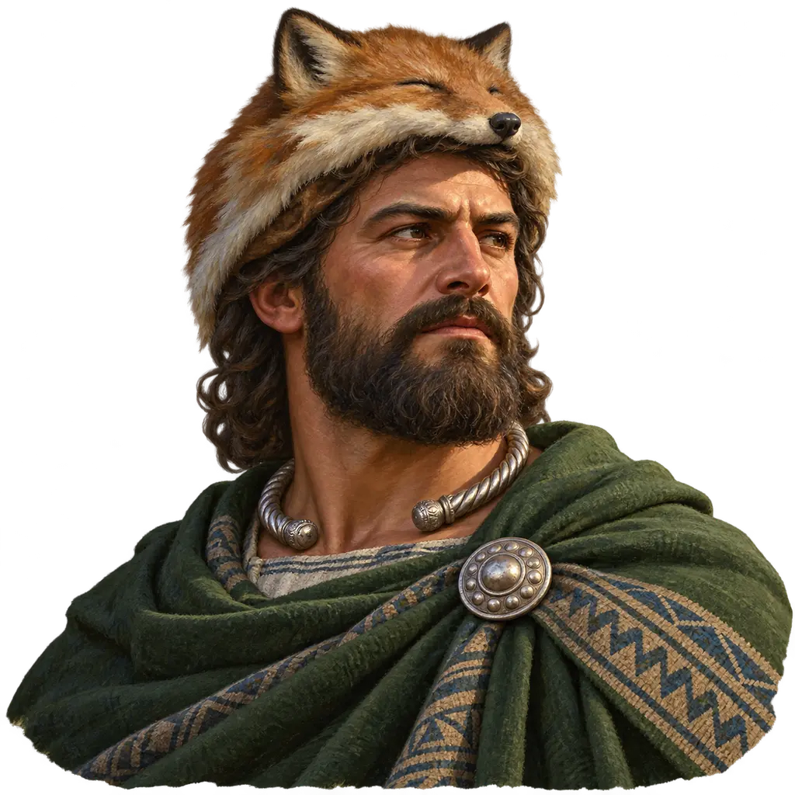
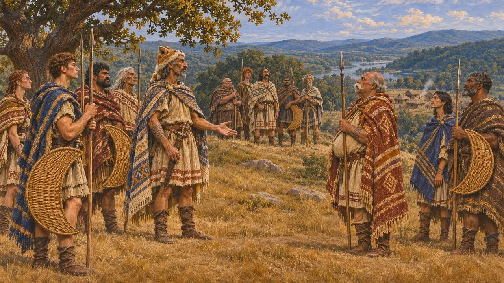
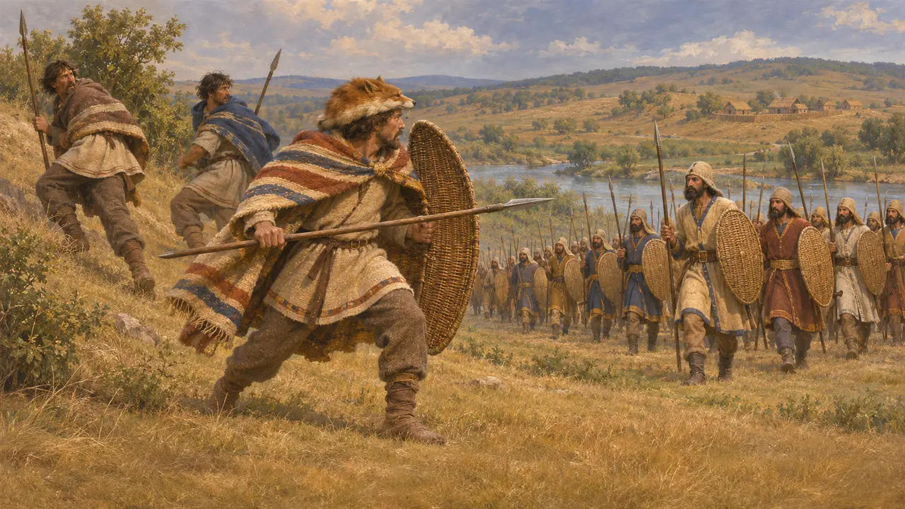
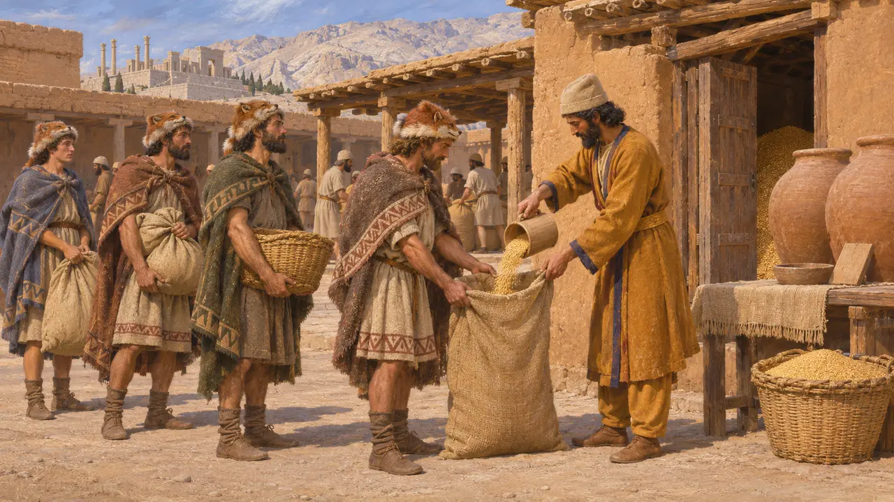
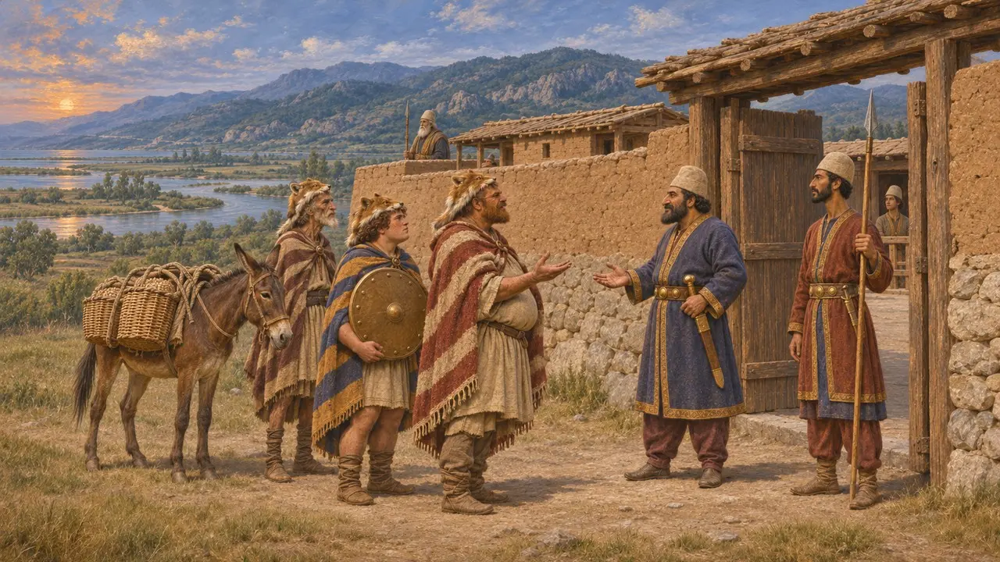
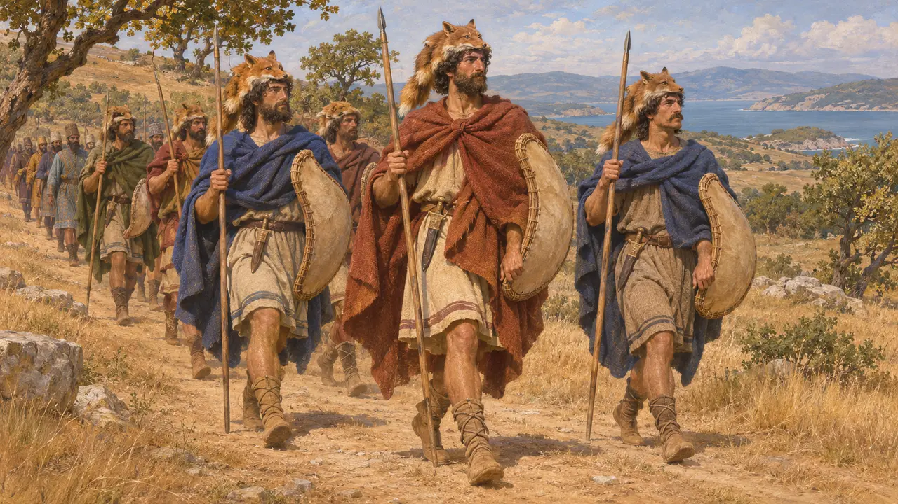
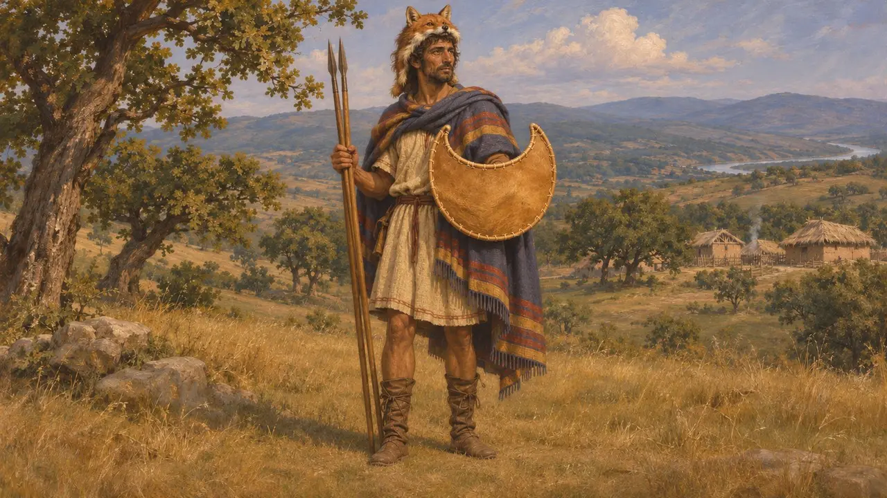

تراکیاییان
اقوام میان دریای اژه و ایستر، تا اندازهای زیر فرمان پارسیان، حدود 513 تا 479 پ.م.
در بازی: مرحلهٔ ۹: آبراهه
تراکیاییان مردمانی پرشمار و جدا از هم بودند که میان کرانهٔ شمالی دریای اژه و پاییندست ایستر (دانوب) میزیستند و در این دوره شاهی یگانه نداشتند. داریوش از حدود سال 513 بخش بزرگی از سرزمینشان را زیر فرمان پارسیان درآورد. تراکیه یک نسل تمام راه شاه به اروپا بود؛ سرزمین جنگاوران، الوار و معادن نقره، و همان سرزمینی که سپاه خشایارشا در سال 480 از آن گذشت.
در بازی: تراکیاییانِ کرانه بهعنوان شریک بازرگانی پدیدار میشوند و پلتاستها و سوارکاران تراکیایی در آتوس حضور دارند. هرودوت از سواران تراکیایی در سپاه خشایارشا یاد نمیکند؛ سوارهنظام تراکیایی بعدها و در نوشتههای توکودیدس بهتر گواهی شده است.

مردمانی بسیار، بیهیچ پادشاهی یگانه
روایت باستانیهرودوت میگوید تراکیاییان پس از هندیان پرشمارترین قوم بودند و اگر روزی زیر فرمان یک فرمانروا یکی میشدند، از همه نیرومندتر میگشتند؛ اما به گمان او چنین روزی هرگز فرا نمیرسید. او میگوید آنان در سرزمینهای گوناگون نامهای بسیار داشتند و گتها و تراوسیها را به سبب آیینهایشان جدا میشمارد. به روایت او، دیگران خالکوبی را نشان نژادگی میدانستند، کشاورزی را پستترین پیشه میشمردند و زیستن از راه جنگ و تاراج را شرافتمندانهترین کار میپنداشتند.
Herodotus 5.3-6

کشورگشایی در روزگار داریوش
روایت باستانیهرودوت میگوید که چون داریوش برای جنگ با سکاها از بسفر گذشت (لشکرکشیای که تاریخنگاران آن را به حدود سال 513 میرسانند)، از میان تراکیاییان تنها گتها پایداری کردند و شکست خوردند. سپس سردار او مگابازوس، که در اروپا مانده بود، پرینتوس و تراکیاییان کرانهنشین را به فرمان آورد و پایونیان را از درهٔ استریمون به آسیا کوچاند. در سال 492 بریگویهای تراکیایی شبانه به اردوگاه مردونیه تاختند و او را زخمی کردند، هرچند او سرانجام آنان را نیز به فرمان آورد.
Herodotus 4.89-93; 5.1-2; 5.12-16; 6.45

اسکودره در اسناد پارسی
در اسنادسنگنبشتهٔ آرامگاه داریوش در نقش رستم، سکودرا را در شمار سرزمینهای شاهنشاهی او میآورد و سنگنبشتهٔ خشایارشا در تخت جمشید نیز دوباره از آن نام میبرد. سکودرا در فهرست پیشین بیستون نیامده است. برخی از لوحهای باروی تخت جمشید از کارگران سکودرایی یاد میکنند که در پارس جیره میگرفتند. متنهای پارسی نمیگویند سکودرا کجا بود یا چگونه اداره میشد.
DNa; XPh; DB §6; Persepolis Fortification tablets

فرمانروایی پارسیان تا کجا میرسید
مورد مناقشهبیشتر تاریخنگاران سکودره را با تراکیه، یا بهطور کلی با سرزمینهای شاه در اروپا، یکی میدانند. آنان در این باره همرأی نیستند که آیا سکودره ساتراپی کاملی با فرماندار خود بود یا منطقهای سستپیوندتر از پادگانها، باج و پیمانها. هرودوت از دژهای پارسی در دوریسکوس و ائیون یاد میکند، اما دربارهٔ ادارهٔ آن اندکی میگوید. مردمان درونسرزمینی، چون ساترها، احتمالاً هرگز بهراستی فرمانبر نشدند.
P. Briant, From Cyrus to Alexander, 2002; Z. Archibald, The Odrysian Kingdom of Thrace, 1998

تراکیاییان در جنگ خشایارشا
روایت باستانیهرودوت تراکیاییان آسیا، یعنی بیتونیان، را در سپاه خشایارشا با کلاههایی از پوست روباه، ردای رنگارنگ، چکمههایی از پوست بچهآهو، زوبین، سپرهای سبک و دشنههای کوچک وصف میکند. او میگوید تراکیاییان سر راه، همچون ادونیان، ناچار به همراهی شدند، مردمان کرانهای با کشتی و مردمان درونسرزمین پیاده، جز ساتریان کوهنشین. در سال 479 پ.م.، در جریان محاصرهٔ سستوس، تراکیاییان آپسینتی اویوبازوس پارسی را گرفتند و او را برای خدایشان پلیستوروس قربانی کردند.
Herodotus 7.75; 7.110-111; 9.119

نشانِ کنار نام
روایت باستانینشان تراکیاییها در این بازی هلال پلتا است؛ همان سپر کوچک و سبک پیادگان تراکیایی که هرودوت در سپاه خشایارشا وصف میکند. قبایل تراکیایی پرچم مشترکی نداشتند؛ پلتا بود که به پلتاستهای یونانی نامشان را داد.
Herodotus 7.75
منابع
- Herodotus, Histories, books 4-9
- DNa; XPh; DB §6
- Persepolis Fortification tablets
- Z. Archibald, The Odrysian Kingdom of Thrace, 1998
- P. Briant, From Cyrus to Alexander, 2002
- Thucydides 2.96-98